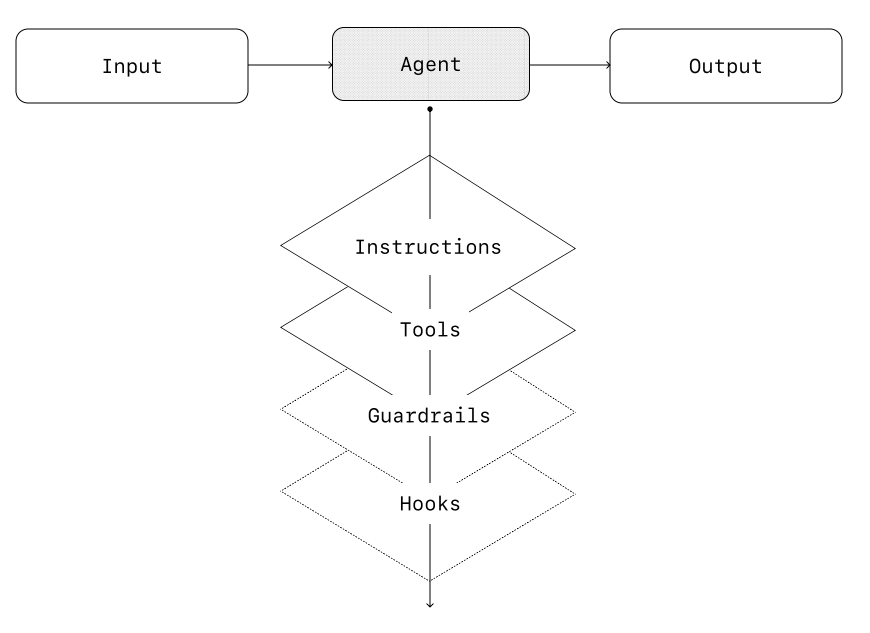
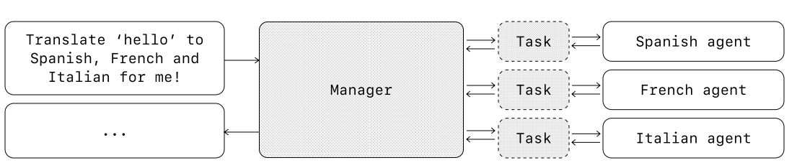
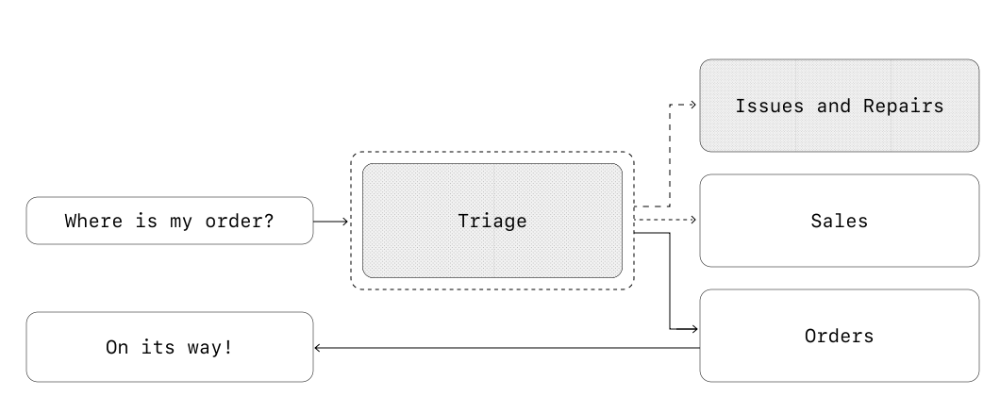

Agent Design Foundations#
Learn the fundamental components and principles for building effective agents.
In its most fundamental form, an agent consists of three core components:
Model - The LLM powering the agent’s reasoning and decision-making
Tools - External functions or APIs the agent can use to take action
Instructions - Explicit guidelines and guardrails defining how the agent behaves
Here’s what this looks like in code when using OpenAI’s Agents SDK. You can also implement the same concepts using your preferred library or building directly from scratch.
weather_agent = Agent(
name="Weather agent",
instructions="You are a helpful agent who can talk to users about the weather.",
tools=[get_weather],
)
Selecting your models#
Different models have different strengths and tradeoffs related to task complexity, latency, and cost. As we’ll see in the next section on Orchestration, you might want to consider using a variety of models for different tasks in the workflow.
Not every task requires the smartest model—a simple retrieval or intent classification task may be handled by a smaller, faster model, while harder tasks like deciding whether to approve a refund may benefit from a more capable model.
An approach that works well is to build your agent prototype with the most capable model for every task to establish a performance baseline. From there, try swapping in smaller models to see if they still achieve acceptable results. This way, you don’t prematurely limit the agent’s abilities, and you can diagnose where smaller models succeed or fail.
In summary, the principles for choosing a model are simple:
Set up evals to establish a performance baseline
Focus on meeting your accuracy target with the best models available
Optimize for cost and latency by replacing larger models with smaller ones where possible
You can find a comprehensive guide to selecting OpenAI models here.
Defining tools#
Tools extend your agent’s capabilities by using APIs from underlying applications or systems. For legacy systems without APIs, agents can rely on computer-use models to interact directly with those applications and systems through web and application UIs—just as a human would.
Each tool should have a standardized definition, enabling flexible, many-to-many relationships between tools and agents. Well-documented, thoroughly tested, and reusable tools improve discoverability, simplify version management, and prevent redundant definitions.
Broadly speaking, agents need three types of tools:
Type |
Description |
Examples |
|---|---|---|
Data |
Enable agents to retrieve context and information necessary for executing the workflow. |
Query transaction databases or systems like CRMs, read PDF documents, or search the web. |
Action |
Enable agents to interact with systems to take actions such as adding new information to databases, updating records, or sending messages. |
Send emails and texts, update a CRM record, hand-off a customer service ticket to a human. |
Orchestration |
Agents themselves can serve as tools for other agents—see the Manager Pattern in the Orchestration section. |
Refund agent, Research agent, Writing agent. |
For example, here’s how you would equip the agent defined above with a series of tools when using the Agents SDK:
from agents import Agent, WebSearchTool, function_tool
@function_tool
def save_results(output):
db.insert({"output": output, "timestamp": datetime.time()})
return "File saved"
search_agent = Agent(
name="Search agent",
instructions="Help the user search the internet and save results if asked.",
tools=[WebSearchTool(), save_results],
)
As the number of required tools increases, consider splitting tasks across multiple agents (see Orchestration).
Configuring instructions#
High-quality instructions are essential for any LLM-powered app, but especially critical for agents. Clear instructions reduce ambiguity and improve agent decision-making, resulting in smoother workflow execution and fewer errors.
Best practices for agent instructions#
Practice |
Description |
|---|---|
Use existing documents |
When creating routines, use existing operating procedures, support scripts, or policy documents to create LLM-friendly routines. In customer service for example, routines can roughly map to individual articles in your knowledge base. |
Prompt agents to break down tasks |
Providing smaller, clearer steps from dense resources helps minimize ambiguity and helps the model better follow instructions. |
Define clear actions |
Make sure every step in your routine corresponds to a specific action or output. For example, a step might instruct the agent to ask the user for their order number or to call an API to retrieve account details. Being explicit about the action (and even the wording of a user-facing message) leaves less room for errors in interpretation. |
Capture edge cases |
Real-world interactions often create decision points such as how to proceed when a user provides incomplete information or asks an unexpected question. A robust routine anticipates common variations and includes instructions on how to handle them with conditional steps or branches such as an alternative step if a required piece of info is missing. |
You can use advanced models, like o1 or o3-mini, to automatically generate instructions from existing documents. Here’s a sample prompt illustrating this approach:
"""
You are an expert in writing instructions for an LLM agent. Convert the following help center document into a clear set of instructions, written in a numbered list. The document will be a policy followed by an LLM. Ensure that there is no ambiguity, and that the instructions are written as directions for an agent. The help center document to convert is the following {{help_center_doc}}
"""
Orchestration#
With the foundational components in place, you can consider orchestration patterns to enable your agent to execute workflows effectively.
While it’s tempting to immediately build a fully autonomous agent with complex architecture, customers typically achieve greater success with an incremental approach.
In general, orchestration patterns fall into two categories:
Single-agent systems – A single model equipped with appropriate tools and instructions executes workflows in a loop.
Multi-agent systems – Workflow execution is distributed across multiple coordinated agents.
Let’s explore each pattern in detail.
Single-agent systems#
A single agent can handle many tasks by incrementally adding tools, keeping complexity manageable and simplifying evaluation and maintenance. Each new tool expands its capabilities without prematurely forcing you to orchestrate multiple agents.

Every orchestration approach needs the concept of a ‘run’, typically implemented as a loop that lets agents operate until an exit condition is reached. Common exit conditions include tool calls, a certain structured output, errors, or reaching a maximum number of turns.
For example, in the Agents SDK, agents are started using the Runner.run() method, which loops over the LLM until either:
A final-output tool is invoked, defined by a specific output type
The model returns a response without any tool calls (e.g., a direct user message)
Example usage:
Agents.run(agent, [UserMessage("What's the capital of the USA?")])
This concept of a while loop is central to the functioning of an agent. In multi-agent systems, as you’ll see next, you can have a sequence of tool calls and handoffs between agents but allow the model to run multiple steps until an exit condition is met.
An effective strategy for managing complexity without switching to a multi-agent framework is to use prompt templates. Rather than maintaining numerous individual prompts for distinct use cases, use a single flexible base prompt that accepts policy variables. This template approach adapts easily to various contexts, significantly simplifying maintenance and evaluation. As new use cases arise, you can update variables rather than rewriting entire workflows.
Example prompt template:
"""
You are a call center agent. You are interacting with {{user_first_name}} who has been a member for {{user_tenure}}. The user's most common complaints are about {{user_complaint_categories}}. Greet the user, thank them for being a loyal customer, and answer any questions the user may have!
"""
When to consider creating multiple agents
Our general recommendation is to maximize a single agent’s capabilities first. More agents can provide intuitive separation of concepts, but can introduce additional complexity and overhead, so often a single agent with tools is sufficient.
For many complex workflows, splitting up prompts and tools across multiple agents allows for improved performance and scalability. When your agents fail to follow complicated instructions or consistently select incorrect tools, you may need to further divide your system and introduce more distinct agents.
Practical guidelines for splitting agents include:
Scenario |
When to Split Agents |
|---|---|
Complex logic |
When prompts contain many conditional statements (multiple if-then-else branches), and prompt templates get difficult to scale, consider dividing each logical segment across separate agents. |
Tool overload |
The issue isn’t solely the number of tools, but their similarity or overlap. Some implementations successfully manage more than 15 well-defined, distinct tools while others struggle with fewer than 10 overlapping tools. Use multiple agents if improving tool clarity by providing descriptive names, clear parameters, and detailed descriptions doesn’t improve performance. |
Multi-agent systems#
While multi-agent systems can be designed in numerous ways for specific workflows and requirements, our experience with customers highlights two broadly applicable categories:
Manager (agents as tools): A central “manager” agent coordinates multiple specialized agents via tool calls, each handling a specific task or domain.
Decentralized (agents handing off to agents): Multiple agents operate as peers, handing off tasks to one another based on their specializations.
Multi-agent systems can be modeled as graphs, with agents represented as nodes. In the manager pattern, edges represent tool calls whereas in the decentralized pattern, edges represent handoffs that transfer execution between agents.
Regardless of the orchestration pattern, the same principles apply: keep components flexible, composable, and driven by clear, well-structured prompts.
Manager pattern#
The manager pattern empowers a central LLM—the “manager”—to orchestrate a network of specialized agents seamlessly through tool calls. Instead of losing context or control, the manager intelligently delegates tasks to the right agent at the right time, effortlessly synthesizing the results into a cohesive interaction. This ensures a smooth, unified user experience, with specialized capabilities always available on-demand.
This pattern is ideal for workflows where you only want one agent to control workflow execution and have access to the user.

For example, here’s how you could implement this pattern in the Agents SDK:
from agents import Agent, Runner
spanish_agent = Agent(
name="Spanish Agent",
instructions="Translate the user's message to Spanish."
)
french_agent = Agent(
name="French Agent",
instructions="Translate the user's message to French."
)
italian_agent = Agent(
name="Italian Agent",
instructions="Translate the user's message to Italian."
)
manager_agent = Agent(
name="Manager Agent",
instructions="If asked for multiple translations, you call the relevant tools.",
tools=[
spanish_agent.as_tool(
tool_name="translate_to_spanish",
tool_description="Translate the user's message to Spanish"
),
french_agent.as_tool(
tool_name="translate_to_french",
tool_description="Translate the user's message to French"
),
italian_agent.as_tool(
tool_name="translate_to_italian",
tool_description="Translate the user's message to Italian"
),
],
)
async def main():
msg = input("Translate 'hello' to Spanish, French and Italian for me!\n")
orchestrator_output = await Runner.run(manager_agent, msg)
for message in orchestrator_output.new_messages:
print(f" - {message.content}")
Declarative vs non-declarative graphs#
Some frameworks are declarative, requiring developers to explicitly define every branch, loop, and conditional in the workflow upfront through graphs consisting of nodes (agents) and edges (deterministic or dynamic handoffs). While beneficial for visual clarity, this approach can quickly become cumbersome and challenging as workflows grow more dynamic and complex, often necessitating the learning of specialized domain-specific languages.
In contrast, the Agents SDK adopts a more flexible, code-first approach. Developers can directly express workflow logic using familiar programming constructs without needing to pre-define the entire graph upfront, enabling more dynamic and adaptable agent orchestration.
Decentralized pattern#
In a decentralized pattern, agents can ‘handoff’ workflow execution to one another. Handoffs are a one-way transfer that allow an agent to delegate to another agent. In the Agents SDK, a handoff is a type of tool, or function. If an agent calls a handoff function, we immediately start execution on that new agent that was handed off to while also transferring the latest conversation state.
This pattern involves using many agents on equal footing, where one agent can directly hand off control of the workflow to another agent. This is optimal when you don’t need a single agent maintaining central control or synthesis—instead allowing each agent to take over execution and interact with the user as needed.

For example, here’s how you’d implement the decentralized pattern using the Agents SDK for a customer service workflow that handles both sales and support:
from agents import Agent, Runner
technical_support_agent = Agent(
name="Technical Support Agent",
instructions="You provide expert assistance with resolving technical issues, system outages, or product troubleshooting.",
tools=[search_knowledge_base]
)
sales_assistant_agent = Agent(
name="Sales Assistant Agent",
instructions="You help enterprise clients browse the product catalog, recommend suitable solutions, and facilitate purchase transactions.",
tools=[initiate_purchase_order]
)
order_management_agent = Agent(
name="Order Management Agent",
instructions="You assist clients with inquiries regarding order tracking, delivery schedules, and processing returns or refunds.",
tools=[track_order_status, initiate_refund_process]
)
triage_agent = Agent(
name="Triage Agent",
instructions="You act as the first point of contact, assessing customer queries and directing them promptly to the correct specialized agent.",
handoffs=[technical_support_agent, sales_assistant_agent, order_management_agent],
)
await Runner.run(
triage_agent,
input("Could you please provide an update on the delivery timeline for our recent purchase?\n")
)
In the above example, the initial user message is sent to triage_agent. Recognizing that the input concerns a recent purchase, the triage_agent would invoke a handoff to the order_management_agent, transferring control to it.
This pattern is especially effective for scenarios like conversation triage, or whenever you prefer specialized agents to fully take over certain tasks without the original agent needing to remain involved. Optionally, you can equip the second agent with a handoff back to the original agent, allowing it to transfer control again if necessary.